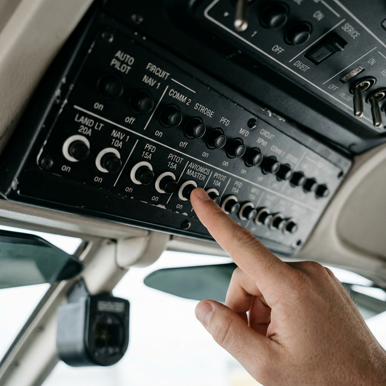

Circuit protection
fuses/breakers
Module Objectives
- State the primary purpose of an aircraft circuit breaker or fuse.
- Differentiate the operational characteristics of fuses and circuit breakers.
- Identify the hazard of repeatedly resetting a tripped circuit breaker.
Why Does This Matter?

An aging wire behind the instrument panel chafes against a sharp metal rib until the insulation wears through. The conductor touches the bare metal, creating a dead short to ground. Instantly, 50 amps of current surges through a wire rated for only 10 amps. The wire begins to rapidly heat, softening the insulation and preparing to ignite. The circuit breaker (or fuse) is the only component preventing an uncontrollable in-flight electrical fire.
What You Need To Know
The Primary Purpose
Fuses and circuit breakers exist strictly to protect the aircraft wiring from overcurrent conditions.
This is a critical distinction: they are installed to protect the wire, not the expensive avionics equipment at the end of the wire. Circuit protection devices are sized strictly to the current-carrying capacity of the wire gauge. If an 18-AWG wire can safely carry 10 amps, the breaker is rated at 10 amps — regardless of whether the connected radio draws 1 amp or 8 amps.
Fuses: One and Done
A fuse contains a calibrated metal element (link) designed to melt when current exceeds its specific rating.
- The melted element permanently opens the circuit, halting current flow.
- A fuse cannot be reset — it is destroyed by design and must be replaced.
- Fuses are simple, highly reliable, and have no moving mechanical parts.
Circuit Breakers: Mechanical Tripping
A circuit breaker (CB) is a mechanical thermal/magnetic switch that trips (springs open) when current exceeds its rating.
- Breakers can be reset by pushing the button back in after the overcurrent condition is resolved and the thermal element cools.
- Most aircraft circuit breakers are trip-free, meaning the internal mechanism will trip and stay open even if a desperate pilot forcibly holds the button pushed in.
- In a Part 145 shop, a breaker that trips repeatedly on the bench is indicating a persistent hard fault (like a shorted diode or pinched wire). Do not keep resetting it.
What Circuit Protection Does NOT Do
It is vital to understand their limitations. Fuses and breakers:
- Do NOT regulate or step-down voltage.
- Do NOT filter out electrical noise or transients.
- Do NOT protect equipment against voltage spikes (over-voltage).
- Usually cannot trip fast enough to save a sensitive microchip from an internal short.
System Visualization
graph TD
A[Power Bus 28V] --> B[Circuit Breaker 10A]
B --> C[18-AWG Wire]
C --> D[Avionics Load]
D --> E[Short to Ground Occurs!]
E --> F[Current spikes to 50A]
F --> G{Is current > Breaker Rating?}
G -- Yes --> H[Breaker Trips / Pops Open]
H --> I[Current Stops. Wire is Saved from Fire.]
style B fill:#1e40af,stroke:#1e3a8a,stroke-width:2px,color:#fff
style E fill:#991b1b,stroke:#7f1d1d,stroke-width:2px,color:#fff
style H fill:#166534,stroke:#14532d,stroke-width:2px,color:#fff
Interactive Lab
On The Job
When a breaker trips during testing, completely resist the urge to immediately reset it to "see what happens." If it tripped, the circuit drew too much current. Stop. Ask: why did it trip? Check for short circuits, crushed harnesses, or incorrectly pinned connectors. A tripped breaker did its job — now you have to do yours to find the short.
Reference Terms
Fuses and circuit breakers — purpose
Fuses and circuit breakers protect wiring and equipment from overcurrent. When current exceeds the rated value, they interrupt the circuit before the wire overheats and starts a fire. They protect the WIRE, not the equipment — sized to the wire's current capacity.
Fuse — function
A fuse contains a metal element that melts when current exceeds its rated value, permanently opening the circuit. Unlike a circuit breaker, a fuse cannot be reset — it must be replaced. It protects the wiring from overheating by interrupting excessive current.
Overcurrent
An abnormal condition where current flow exceeds the safe thermal rating of the wire insulation.
Circuit Breaker
A resettable, mechanical protective device that opens when heated by excessive current.
Trip-Free
A vital breaker design ensuring the circuit will open during a fault, even if the external actuator is forcibly held closed.
Assessment Check
Circuit protection exists solely to protect wiring from catching fire — fuses melt permanently, breakers trip mechanically, and neither should be ignored when activated. --- ---